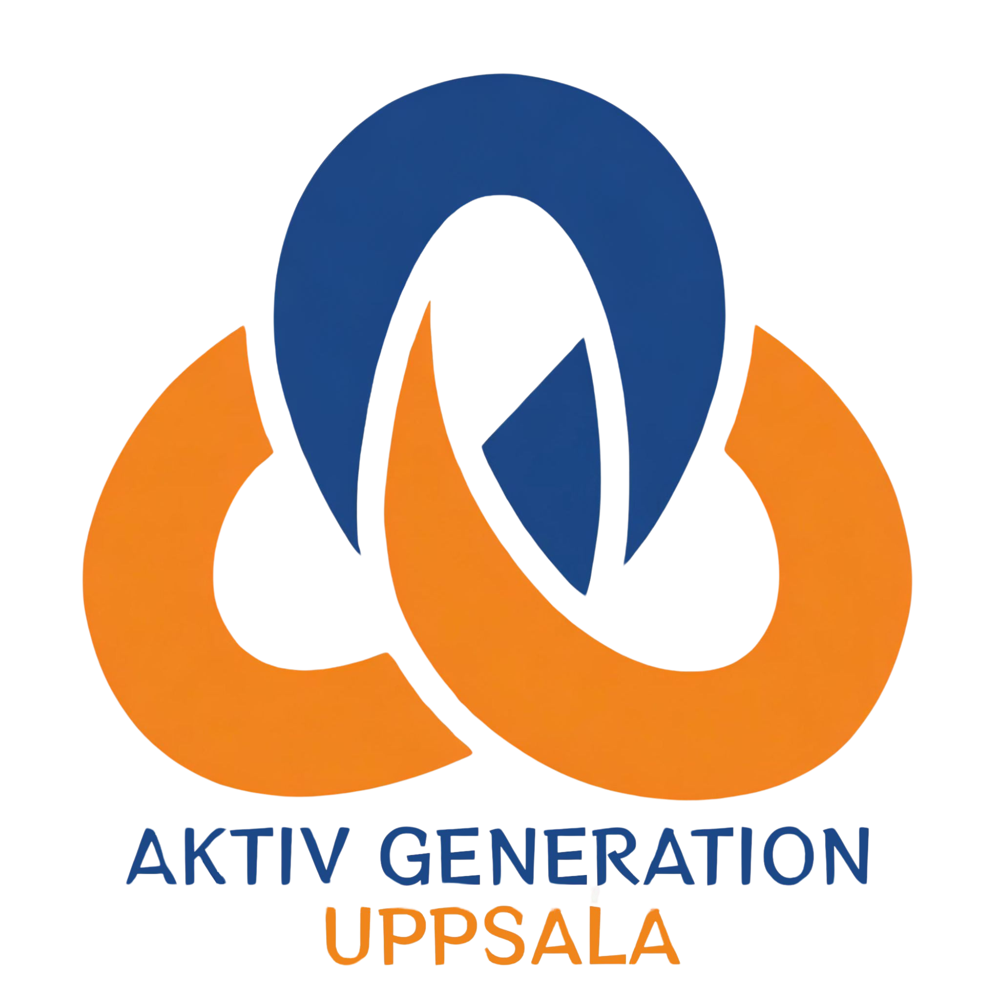

<nav class="navbar">
    <div class="max-width">
        <div class="logo">
            <a href="#hem">
                
            </a>
        </div>
        <div class="menu-btn">
            <i class="fas fa-bars"></i>
        </div>
        <ul class="menu">
            <li><a href="#hem" class="menu-btn">الرئيسية</a></li>
            <li><a href="#om-oss" class="menu-btn">من نحن</a></li>
            <li><a href="#vad-vi-gor" class="menu-btn">ماذا نفعل</a></li>
            <li><a href="#aktiviteter" class="menu-btn">الصحافة</a></li>
            <li><a href="aktiviteter.html" class="menu-btn">الأنشطة</a></li>
            <li><a href="#bildgalleri" class="menu-btn">معرض الصور</a></li>
                <li><a href="facebook.html" class="menu-btn">فيسبوك</a></li>
            <li><a href="#kontakt" class="menu-btn">تواصل معنا</a></li>

            <!-- Desktop: original language dropdown (kept as-is) -->
            <li class="language-selector">
                <a href="#" class="menu-btn">
                    <i class="fas fa-globe"></i> اللغة
                    <i class="fas fa-chevron-down"></i>
                </a>
                <ul class="language-dropdown">
                    <li><a href="../sv/index.html" data-lang="sv">Svenska</a></li>
                    <li><a href="../tr/index.html" data-lang="tr">Türkçe</a></li>
                    <li><a href="index.html" data-lang="en">English</a></li>
                    <li><a href="../ar/index.html" data-lang="ar">العربية</a></li>
                </ul>
            </li>

            <!-- MOBILE ONLY: each language becomes a top-level menu item in hamburger mode -->
            <li class="mobile-language"><a href="../sv/index.html" data-lang="sv">Svenska</a></li>
            <li class="mobile-language"><a href="../tr/index.html" data-lang="tr">Türkçe</a></li>
            <li class="mobile-language"><a href="index.html" data-lang="en">English</a></li>
            <li class="mobile-language"><a href="../ar/index.html" data-lang="ar">العربية</a></li>

            <li><a href="https://forms.gle/sfEatWLa9RC6eEE67" id="outbound-link" class="menu-btn" target="_blank"
                    rel="noopener noreferrer">انضم كعضو</a></li>
            <li>
                <button id="themeToggle" class="theme-toggle" aria-label="Toggle night mode">
                    <i class="fas fa-moon"></i>
                </button>
            </li>
        </ul>
    </div>
</nav>

<!-- Minimal JS for hamburger menu (close-on-click preserved) -->
<script>
    const menuBtn = document.querySelector('.menu-btn i');
    const menu = document.querySelector('.menu');

    menuBtn.addEventListener('click', () => {
        menu.classList.toggle('active');
    });

    // Close menu when any link inside the menu is clicked
    document.querySelectorAll('.menu li a').forEach(link => {
        link.addEventListener('click', () => {
            menu.classList.remove('active');
        });
    });
</script>

<!-- Stronger CSS: mobile-language hidden by default with high specificity -->
<style>
/* base menu */
.navbar .max-width .menu {
    display: none;
    flex-direction: column;
    gap: 10px;
}

/* show menu when active */
.navbar .max-width .menu.active {
    display: flex;
}

/* prevent wrapping */
.navbar .max-width .menu li a {
    white-space: nowrap;
}

/* explicitly hide mobile-language by default (very specific selector + !important) */
.navbar .max-width .menu > .mobile-language {
    display: none !important;
}

/* Desktop layout: show normal menu inline and show dropdown; ensure mobile-language stays hidden */
@media (min-width: 768px) {
    .navbar .max-width .menu {
        display: flex !important;
        flex-direction: row;
        gap: 20px;
        align-items: center;
    }

    .navbar .max-width .menu li a {
        white-space: nowrap;
    }

    /* desktop: show the language-selector dropdown and hide mobile-language */
    .navbar .max-width .menu > .language-selector { display: block !important; position: relative; }
    .navbar .max-width .menu > .language-selector .language-dropdown {
        display: none;
        position: absolute;
        top: 100%;
        left: 0;
        background: white;
        padding: 8px;
        box-shadow: 0 6px 18px rgba(0,0,0,0.08);
        z-index: 40;
    }
    .navbar .max-width .menu > .language-selector:hover .language-dropdown {
        display: block;
    }

    /* ensure mobile items are hidden on desktop (extra specific) */
    .navbar .max-width .menu > .mobile-language { display: none !important; }
}

/* MOBILE layout: hide the desktop dropdown 'language-selector' and show each mobile-language item */
@media (max-width: 767px) {
    .navbar .max-width .menu { width: 100%; }

    /* hide desktop dropdown */
    .navbar .max-width .menu > .language-selector { display: none !important; }

    /* show the mobile-language items inside hamburger */
    .navbar .max-width .menu > .mobile-language {
        display: list-item !important;
    }
}

/* safety: if other rules try to set visibility, keep these items inline-block so they behave nicely */
.navbar .max-width .menu > li {
    display: list-item;
}
</style>
